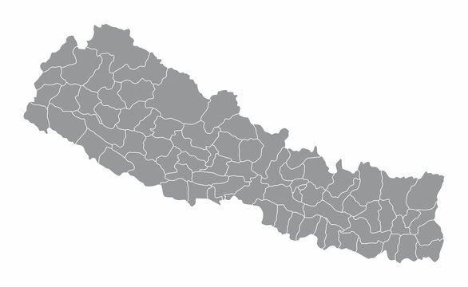

MANISH GURUNG

This portfolio is architected as a Deep Neural Network, symbolizing the iterative flow of professional growth and technical reasoning.
Usecase: Information propagates from Input Features (Education & Skills) through Hidden Layers (Projects & Industry Experience) to converge on the final Output Vector (Target Career State).
Interaction: Click any Neuron node to inspect the underlying "parameters"—detailed data points, achievements, and technical documentation.